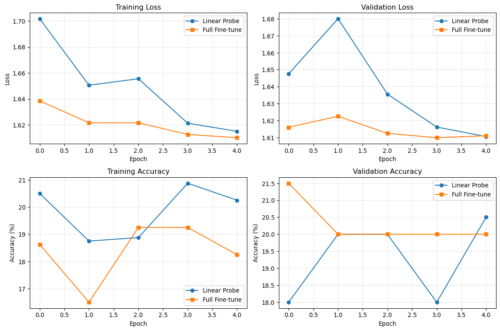

Adapting foundation models for specific geospatial tasks
Learning Objectives
By the end of this session, you will be able to:
Load and fine-tune pretrained geospatial foundation models for new areas of interest (AOI)
Compare linear probing vs. full fine-tuning strategies
Implement efficient training techniques for limited data scenarios
Design and execute transfer learning experiments
Define independent project goals and select appropriate datasets
Prerequisites
This session builds on Weeks 1-4, particularly Week 4’s foundation model loading and feature extraction. Ensure you have a working understanding of PyTorch training loops and the foundation models introduced in Week 4.
Fine-Tuning Strategies Overview
Fine-tuning adapts pretrained models to new tasks or domains. For geospatial foundation models, common scenarios include:
Domain adaptation: Urban to agricultural areas
Task adaptation: Land cover to crop type classification
Geographic adaptation: Temperate to tropical regions
Temporal adaptation: Historical to current imagery
Linear Probing vs. Full Fine-Tuning
import torchimport torch.nn as nnfrom torch.utils.data import DataLoaderimport numpy as npimport matplotlib.pyplot as pltfrom pathlib import Pathimport warningswarnings.filterwarnings('ignore')# Set up reproducible resultstorch.manual_seed(42)np.random.seed(42)class FineTuningStrategy:"""Base class for different fine-tuning approaches"""def__init__(self, foundation_model, num_classes, strategy='linear_probe'):self.foundation_model = foundation_modelself.num_classes = num_classesself.strategy = strategy# Create the adapted model based on strategyif strategy =='linear_probe':self.model =self._create_linear_probe()elif strategy =='full_finetune':self.model =self._create_full_finetune()else:raiseValueError(f"Unknown strategy: {strategy}")def _create_linear_probe(self):"""Freeze foundation model, only train classifier head"""# Freeze all foundation model parametersfor param inself.foundation_model.parameters(): param.requires_grad =False# Add trainable classification head feature_dim =768# Typical for ViT-based models classifier = nn.Sequential( nn.LayerNorm(feature_dim), nn.Linear(feature_dim, self.num_classes) )return nn.Sequential(self.foundation_model, classifier)def _create_full_finetune(self):"""Unfreeze foundation model, train end-to-end"""# Unfreeze all parametersfor param inself.foundation_model.parameters(): param.requires_grad =True# Add classification head feature_dim =768 classifier = nn.Sequential( nn.LayerNorm(feature_dim), nn.Linear(feature_dim, self.num_classes) )return nn.Sequential(self.foundation_model, classifier)def count_trainable_params(self):"""Count number of trainable parameters"""returnsum(p.numel() for p inself.model.parameters() if p.requires_grad)# Example foundation model (simplified)class MockFoundationModel(nn.Module):def__init__(self):super().__init__()self.backbone = nn.Sequential( nn.Conv2d(3, 64, 3, padding=1), nn.ReLU(), nn.AdaptiveAvgPool2d(1), nn.Flatten(), nn.Linear(64, 768) )def forward(self, x):returnself.backbone(x)# Demonstrate the differencebase_model = MockFoundationModel()num_classes =5# e.g., 5 crop types# Linear probinglinear_strategy = FineTuningStrategy(base_model, num_classes, 'linear_probe')print(f"Linear Probe - Trainable parameters: {linear_strategy.count_trainable_params():,}")# Full fine-tuningfull_strategy = FineTuningStrategy(base_model, num_classes, 'full_finetune')print(f"Full Fine-tune - Trainable parameters: {full_strategy.count_trainable_params():,}")
Linear Probe - Trainable parameters: 5,381
Full Fine-tune - Trainable parameters: 57,093
Practical Fine-Tuning Implementation
Step 1: Data Preparation for New AOI
from torch.utils.data import Dataset, DataLoaderfrom torchvision import transformsfrom PIL import Imageclass CropTypeDataset(Dataset):"""Dataset for crop type classification in a new AOI"""def__init__(self, image_paths, labels, transform=None):self.image_paths = image_pathsself.labels = labelsself.transform = transform# Crop type mappingself.crop_types = {0: 'Corn',1: 'Soybean',2: 'Wheat',3: 'Cotton',4: 'Other' }def__len__(self):returnlen(self.image_paths)def__getitem__(self, idx):# For demo, create synthetic data# In practice, load from self.image_paths[idx] image = torch.randn(3, 224, 224) # RGB image label =self.labels[idx]ifself.transform: image =self.transform(image)return image, label# Create synthetic dataset for demonstrationn_samples =1000image_paths = [f"crop_image_{i}.tif"for i inrange(n_samples)]labels = np.random.randint(0, 5, n_samples)# Data augmentation for fine-tuningtrain_transform = transforms.Compose([ transforms.RandomHorizontalFlip(0.5), transforms.RandomVerticalFlip(0.5), transforms.RandomRotation(10), transforms.Normalize(mean=[0.485, 0.456, 0.406], std=[0.229, 0.224, 0.225])])val_transform = transforms.Compose([ transforms.Normalize(mean=[0.485, 0.456, 0.406], std=[0.229, 0.224, 0.225])])# Split datatrain_size =int(0.8* n_samples)train_paths, val_paths = image_paths[:train_size], image_paths[train_size:]train_labels, val_labels = labels[:train_size], labels[train_size:]# Create datasetstrain_dataset = CropTypeDataset(train_paths, train_labels, train_transform)val_dataset = CropTypeDataset(val_paths, val_labels, val_transform)# Create data loaderstrain_loader = DataLoader(train_dataset, batch_size=32, shuffle=True)val_loader = DataLoader(val_dataset, batch_size=32, shuffle=False)print(f"Training samples: {len(train_dataset)}")print(f"Validation samples: {len(val_dataset)}")print(f"Number of classes: {len(train_dataset.crop_types)}")
Training samples: 800
Validation samples: 200
Number of classes: 5
Step 2: Training Loop with Different Strategies
import torch.optim as optimfrom torch.optim.lr_scheduler import CosineAnnealingLRimport timefrom collections import defaultdictclass FineTuner:"""Fine-tuning trainer with multiple strategies"""def__init__(self, model, device='cpu'):self.model = model.to(device)self.device = deviceself.history = defaultdict(list)def train_epoch(self, train_loader, optimizer, criterion):"""Train for one epoch"""self.model.train() total_loss =0 correct =0 total =0for batch_idx, (data, target) inenumerate(train_loader): data, target = data.to(self.device), target.to(self.device) optimizer.zero_grad() output =self.model(data) loss = criterion(output, target) loss.backward() optimizer.step() total_loss += loss.item() pred = output.argmax(dim=1) correct += pred.eq(target).sum().item() total += target.size(0) avg_loss = total_loss /len(train_loader) accuracy =100.* correct / totalreturn avg_loss, accuracydef validate(self, val_loader, criterion):"""Validate the model"""self.model.eval() total_loss =0 correct =0 total =0with torch.no_grad():for data, target in val_loader: data, target = data.to(self.device), target.to(self.device) output =self.model(data) loss = criterion(output, target) total_loss += loss.item() pred = output.argmax(dim=1) correct += pred.eq(target).sum().item() total += target.size(0) avg_loss = total_loss /len(val_loader) accuracy =100.* correct / totalreturn avg_loss, accuracydef fit(self, train_loader, val_loader, epochs=10, lr=1e-3, strategy='linear_probe'):"""Complete training procedure""" criterion = nn.CrossEntropyLoss()# Different learning rates for different strategiesif strategy =='linear_probe': optimizer = optim.Adam(self.model.parameters(), lr=lr)else: # full fine-tuning optimizer = optim.Adam(self.model.parameters(), lr=lr/10) # Lower LR for pretrained weights scheduler = CosineAnnealingLR(optimizer, epochs)print(f"\nTraining with {strategy} strategy...")print(f"Trainable parameters: {sum(p.numel() for p inself.model.parameters() if p.requires_grad):,}")for epoch inrange(epochs): start_time = time.time()# Train train_loss, train_acc =self.train_epoch(train_loader, optimizer, criterion)# Validate val_loss, val_acc =self.validate(val_loader, criterion)# Update scheduler scheduler.step()# Store historyself.history['train_loss'].append(train_loss)self.history['train_acc'].append(train_acc)self.history['val_loss'].append(val_loss)self.history['val_acc'].append(val_acc) epoch_time = time.time() - start_timeprint(f"Epoch {epoch+1:2d}/{epochs} | "f"Train Loss: {train_loss:.4f} | Train Acc: {train_acc:.2f}% | "f"Val Loss: {val_loss:.4f} | Val Acc: {val_acc:.2f}% | "f"Time: {epoch_time:.1f}s")returnself.history# Demonstrate both strategiesdevice = torch.device('cuda'if torch.cuda.is_available() else'cpu')print(f"Using device: {device}")# Linear probinglinear_model = FineTuningStrategy(MockFoundationModel(), 5, 'linear_probe').modellinear_trainer = FineTuner(linear_model, device)linear_history = linear_trainer.fit(train_loader, val_loader, epochs=5, strategy='linear_probe')# Full fine-tuningfull_model = FineTuningStrategy(MockFoundationModel(), 5, 'full_finetune').modelfull_trainer = FineTuner(full_model, device)full_history = full_trainer.fit(train_loader, val_loader, epochs=5, strategy='full_finetune')
Using device: cpu
Training with linear_probe strategy...
Trainable parameters: 5,381
Epoch 1/5 | Train Loss: 1.7018 | Train Acc: 20.50% | Val Loss: 1.6475 | Val Acc: 18.00% | Time: 4.3s
Epoch 2/5 | Train Loss: 1.6505 | Train Acc: 18.75% | Val Loss: 1.6800 | Val Acc: 20.00% | Time: 3.7s
Epoch 3/5 | Train Loss: 1.6555 | Train Acc: 18.88% | Val Loss: 1.6356 | Val Acc: 20.00% | Time: 3.8s
Epoch 4/5 | Train Loss: 1.6213 | Train Acc: 20.88% | Val Loss: 1.6162 | Val Acc: 18.00% | Time: 3.8s
Epoch 5/5 | Train Loss: 1.6150 | Train Acc: 20.25% | Val Loss: 1.6105 | Val Acc: 20.50% | Time: 3.7s
Training with full_finetune strategy...
Trainable parameters: 57,093
Epoch 1/5 | Train Loss: 1.6385 | Train Acc: 18.62% | Val Loss: 1.6160 | Val Acc: 21.50% | Time: 6.1s
Epoch 2/5 | Train Loss: 1.6216 | Train Acc: 16.50% | Val Loss: 1.6225 | Val Acc: 20.00% | Time: 6.1s
Epoch 3/5 | Train Loss: 1.6216 | Train Acc: 19.25% | Val Loss: 1.6125 | Val Acc: 20.00% | Time: 6.2s
Epoch 4/5 | Train Loss: 1.6126 | Train Acc: 19.25% | Val Loss: 1.6099 | Val Acc: 20.00% | Time: 6.5s
Epoch 5/5 | Train Loss: 1.6101 | Train Acc: 18.25% | Val Loss: 1.6110 | Val Acc: 20.00% | Time: 6.9s
Step 3: Comparing Results
# Plot training curvesfig, ((ax1, ax2), (ax3, ax4)) = plt.subplots(2, 2, figsize=(12, 8))# Training lossax1.plot(linear_history['train_loss'], label='Linear Probe', marker='o')ax1.plot(full_history['train_loss'], label='Full Fine-tune', marker='s')ax1.set_title('Training Loss')ax1.set_xlabel('Epoch')ax1.set_ylabel('Loss')ax1.legend()ax1.grid(True, alpha=0.3)# Validation lossax2.plot(linear_history['val_loss'], label='Linear Probe', marker='o')ax2.plot(full_history['val_loss'], label='Full Fine-tune', marker='s')ax2.set_title('Validation Loss')ax2.set_xlabel('Epoch')ax2.set_ylabel('Loss')ax2.legend()ax2.grid(True, alpha=0.3)# Training accuracyax3.plot(linear_history['train_acc'], label='Linear Probe', marker='o')ax3.plot(full_history['train_acc'], label='Full Fine-tune', marker='s')ax3.set_title('Training Accuracy')ax3.set_xlabel('Epoch')ax3.set_ylabel('Accuracy (%)')ax3.legend()ax3.grid(True, alpha=0.3)# Validation accuracyax4.plot(linear_history['val_acc'], label='Linear Probe', marker='o')ax4.plot(full_history['val_acc'], label='Full Fine-tune', marker='s')ax4.set_title('Validation Accuracy')ax4.set_xlabel('Epoch')ax4.set_ylabel('Accuracy (%)')ax4.legend()ax4.grid(True, alpha=0.3)plt.tight_layout()plt.show()# Print final resultsprint("\n=== Final Results ===")print(f"Linear Probe - Final Val Acc: {linear_history['val_acc'][-1]:.2f}%")print(f"Full Fine-tune - Final Val Acc: {full_history['val_acc'][-1]:.2f}%")

=== Final Results ===
Linear Probe - Final Val Acc: 20.50%
Full Fine-tune - Final Val Acc: 20.00%
Advanced Fine-Tuning Techniques
Learning Rate Scheduling
class AdvancedFineTuner(FineTuner):"""Enhanced fine-tuning with advanced techniques"""def fit_with_warmup(self, train_loader, val_loader, epochs=20, base_lr=1e-4, warmup_epochs=3):"""Training with learning rate warmup and differential rates""" criterion = nn.CrossEntropyLoss()# Separate learning rates for backbone and head backbone_params = [] head_params = []for name, param inself.model.named_parameters():if param.requires_grad:if'backbone'in name orany(x in name for x in ['conv', 'transformer']): backbone_params.append(param)else: head_params.append(param)# Differential learning rates optimizer = optim.AdamW([ {'params': backbone_params, 'lr': base_lr /10}, # Lower LR for pretrained {'params': head_params, 'lr': base_lr} # Higher LR for new head ], weight_decay=0.01)# Warmup schedulerdef lr_lambda(epoch):if epoch < warmup_epochs:return epoch / warmup_epochselse:return0.5* (1+ np.cos(np.pi * (epoch - warmup_epochs) / (epochs - warmup_epochs))) scheduler = optim.lr_scheduler.LambdaLR(optimizer, lr_lambda)print(f"\nAdvanced fine-tuning with warmup...")print(f"Backbone params: {len(backbone_params)}, Head params: {len(head_params)}") best_val_acc =0 patience =5 patience_counter =0for epoch inrange(epochs): start_time = time.time()# Train train_loss, train_acc =self.train_epoch(train_loader, optimizer, criterion)# Validate val_loss, val_acc =self.validate(val_loader, criterion)# Update scheduler scheduler.step()# Early stoppingif val_acc > best_val_acc: best_val_acc = val_acc patience_counter =0# Save best model torch.save(self.model.state_dict(), 'best_model.pth')else: patience_counter +=1# Store historyself.history['train_loss'].append(train_loss)self.history['train_acc'].append(train_acc)self.history['val_loss'].append(val_loss)self.history['val_acc'].append(val_acc) current_lr = optimizer.param_groups[0]['lr'] epoch_time = time.time() - start_timeprint(f"Epoch {epoch+1:2d}/{epochs} | "f"Train: {train_loss:.4f}/{train_acc:.2f}% | "f"Val: {val_loss:.4f}/{val_acc:.2f}% | "f"LR: {current_lr:.6f} | Time: {epoch_time:.1f}s")if patience_counter >= patience:print(f"Early stopping at epoch {epoch+1}")breakprint(f"Best validation accuracy: {best_val_acc:.2f}%")returnself.history# Demonstrate advanced techniquesadvanced_model = FineTuningStrategy(MockFoundationModel(), 5, 'full_finetune').modeladvanced_trainer = AdvancedFineTuner(advanced_model, device)advanced_history = advanced_trainer.fit_with_warmup(train_loader, val_loader, epochs=15)
This is where you start defining your independent project for the remainder of the course. Consider these elements:
Problem Definition: What specific geospatial challenge will you address?
Dataset Selection: What data sources will you use?
Model Choice: Which foundation model best fits your task?
Evaluation Strategy: How will you measure success?
Project Template
class ProjectPlanner:"""Template for defining your independent project"""def__init__(self):self.project_template = {'title': '','problem_statement': '','dataset': {'name': '','source': '','size': '','spatial_resolution': '','temporal_coverage': '','labels': [] },'model': {'foundation_model': '','fine_tuning_strategy': '','expected_challenges': [] },'evaluation': {'metrics': [],'baseline': '','success_criteria': '' },'timeline': {'week_6': 'Data preparation and initial experiments','week_7': 'Model fine-tuning and optimization','week_8': 'Evaluation and comparison','week_9': 'Final analysis and presentation prep','week_10': 'Final presentation' } }def example_projects(self):"""Show example project ideas""" examples = [ {'title': 'Crop Disease Detection in Smallholder Farms','problem': 'Early detection of crop diseases using satellite imagery','data': 'Sentinel-2 time series + ground truth from field surveys','model': 'Prithvi with fine-tuning for disease classification' }, {'title': 'Urban Heat Island Mapping','problem': 'Fine-scale temperature prediction in urban areas','data': 'Landsat thermal + urban morphology data','model': 'SatMAE with regression head for temperature prediction' }, {'title': 'Wildfire Risk Assessment','problem': 'Predicting wildfire probability from environmental conditions','data': 'Multi-modal: Sentinel-2, weather, topography, historical fires','model': 'Multi-modal foundation model with temporal fusion' } ]for i, example inenumerate(examples, 1):print(f"\nExample {i}: {example['title']}")print(f"Problem: {example['problem']}")print(f"Data: {example['data']}")print(f"Model: {example['model']}")return examplesdef fill_template(self, **kwargs):"""Fill in your project details"""for key, value in kwargs.items():if key inself.project_template:self.project_template[key] = valuereturnself.project_template# Project planning sessionplanner = ProjectPlanner()print("=== Example Project Ideas ===")examples = planner.example_projects()print("\n=== Your Project Template ===")print("Use this template to define your project:")for key, value in planner.project_template.items():print(f"{key}: {value}")
=== Example Project Ideas ===
Example 1: Crop Disease Detection in Smallholder Farms
Problem: Early detection of crop diseases using satellite imagery
Data: Sentinel-2 time series + ground truth from field surveys
Model: Prithvi with fine-tuning for disease classification
Example 2: Urban Heat Island Mapping
Problem: Fine-scale temperature prediction in urban areas
Data: Landsat thermal + urban morphology data
Model: SatMAE with regression head for temperature prediction
Example 3: Wildfire Risk Assessment
Problem: Predicting wildfire probability from environmental conditions
Data: Multi-modal: Sentinel-2, weather, topography, historical fires
Model: Multi-modal foundation model with temporal fusion
=== Your Project Template ===
Use this template to define your project:
title:
problem_statement:
dataset: {'name': '', 'source': '', 'size': '', 'spatial_resolution': '', 'temporal_coverage': '', 'labels': []}
model: {'foundation_model': '', 'fine_tuning_strategy': '', 'expected_challenges': []}
evaluation: {'metrics': [], 'baseline': '', 'success_criteria': ''}
timeline: {'week_6': 'Data preparation and initial experiments', 'week_7': 'Model fine-tuning and optimization', 'week_8': 'Evaluation and comparison', 'week_9': 'Final analysis and presentation prep', 'week_10': 'Final presentation'}
Efficiency Tips & Best Practices
Resource Management
Fine-tuning can be computationally expensive. Use these strategies to optimize:
Start with linear probing to establish baseline performance
Use mixed precision training (torch.cuda.amp) to reduce memory usage
Implement gradient accumulation for larger effective batch sizes
Apply data augmentation carefully - some transforms may not be appropriate for satellite imagery
Memory-Efficient Training
from torch.cuda.amp import autocast, GradScalerclass EfficientFineTuner(FineTuner):"""Memory-efficient fine-tuning with mixed precision"""def__init__(self, model, device='cpu', use_amp=True):super().__init__(model, device)self.use_amp = use_amp and device.type=='cuda'self.scaler = GradScaler() ifself.use_amp elseNonedef train_epoch_efficient(self, train_loader, optimizer, criterion, accumulation_steps=4):"""Memory-efficient training with gradient accumulation"""self.model.train() total_loss =0 correct =0 total =0 optimizer.zero_grad()for batch_idx, (data, target) inenumerate(train_loader): data, target = data.to(self.device), target.to(self.device)with autocast(enabled=self.use_amp): output =self.model(data) loss = criterion(output, target) / accumulation_stepsifself.use_amp:self.scaler.scale(loss).backward()else: loss.backward()if (batch_idx +1) % accumulation_steps ==0:ifself.use_amp:self.scaler.step(optimizer)self.scaler.update()else: optimizer.step() optimizer.zero_grad() total_loss += loss.item() * accumulation_steps pred = output.argmax(dim=1) correct += pred.eq(target).sum().item() total += target.size(0) avg_loss = total_loss /len(train_loader) accuracy =100.* correct / totalreturn avg_loss, accuracyprint("\n=== Efficiency Tips ===")print("1. Use mixed precision training (AMP) to reduce memory usage")print("2. Implement gradient accumulation for larger effective batch sizes")print("3. Start with linear probing before full fine-tuning")print("4. Use appropriate data augmentation for satellite imagery")print("5. Monitor GPU memory usage and adjust batch size accordingly")
=== Efficiency Tips ===
1. Use mixed precision training (AMP) to reduce memory usage
2. Implement gradient accumulation for larger effective batch sizes
3. Start with linear probing before full fine-tuning
4. Use appropriate data augmentation for satellite imagery
5. Monitor GPU memory usage and adjust batch size accordingly
Assignment: Define Your Project
Week 5 Deliverable
By the end of this week, complete your project proposal including:
Problem Statement: Clear description of the geospatial challenge you’ll address
Dataset Plan: Identify and access your target dataset
Model Strategy: Choose foundation model and fine-tuning approach
Evaluation Plan: Define metrics and success criteria
Timeline: Map tasks to remaining weeks
Submit a 1-2 page project proposal by end of week.
Next Steps
Week 6: Begin implementing your project with spatiotemporal modeling techniques
Week 7: Scale up analysis using cloud platforms and optimization
Week 8: Build deployment pipeline and evaluation framework
Week 9: Finalize analysis and prepare presentation
Week 10: Final project presentations
The foundation model fine-tuning techniques you’ve learned this week will be essential for adapting pretrained models to your specific use case and geographic area of interest.
Source Code
---title: "Week 5: Fine-Tuning & Transfer Learning"subtitle: "Adapting foundation models for specific geospatial tasks"editor_options: chunk_output_type: consolejupyter: geoaiformat: html: toc: true toc-depth: 3---## Learning ObjectivesBy the end of this session, you will be able to:- Load and fine-tune pretrained geospatial foundation models for new areas of interest (AOI)- Compare linear probing vs. full fine-tuning strategies- Implement efficient training techniques for limited data scenarios- Design and execute transfer learning experiments- Define independent project goals and select appropriate datasets:::{.callout-note}## PrerequisitesThis session builds on Weeks 1-4, particularly Week 4's foundation model loading and feature extraction. Ensure you have a working understanding of PyTorch training loops and the foundation models introduced in Week 4.:::## Fine-Tuning Strategies OverviewFine-tuning adapts pretrained models to new tasks or domains. For geospatial foundation models, common scenarios include:- **Domain adaptation**: Urban to agricultural areas- **Task adaptation**: Land cover to crop type classification- **Geographic adaptation**: Temperate to tropical regions- **Temporal adaptation**: Historical to current imagery### Linear Probing vs. Full Fine-Tuning```{python}import torchimport torch.nn as nnfrom torch.utils.data import DataLoaderimport numpy as npimport matplotlib.pyplot as pltfrom pathlib import Pathimport warningswarnings.filterwarnings('ignore')# Set up reproducible resultstorch.manual_seed(42)np.random.seed(42)class FineTuningStrategy:"""Base class for different fine-tuning approaches"""def__init__(self, foundation_model, num_classes, strategy='linear_probe'):self.foundation_model = foundation_modelself.num_classes = num_classesself.strategy = strategy# Create the adapted model based on strategyif strategy =='linear_probe':self.model =self._create_linear_probe()elif strategy =='full_finetune':self.model =self._create_full_finetune()else:raiseValueError(f"Unknown strategy: {strategy}")def _create_linear_probe(self):"""Freeze foundation model, only train classifier head"""# Freeze all foundation model parametersfor param inself.foundation_model.parameters(): param.requires_grad =False# Add trainable classification head feature_dim =768# Typical for ViT-based models classifier = nn.Sequential( nn.LayerNorm(feature_dim), nn.Linear(feature_dim, self.num_classes) )return nn.Sequential(self.foundation_model, classifier)def _create_full_finetune(self):"""Unfreeze foundation model, train end-to-end"""# Unfreeze all parametersfor param inself.foundation_model.parameters(): param.requires_grad =True# Add classification head feature_dim =768 classifier = nn.Sequential( nn.LayerNorm(feature_dim), nn.Linear(feature_dim, self.num_classes) )return nn.Sequential(self.foundation_model, classifier)def count_trainable_params(self):"""Count number of trainable parameters"""returnsum(p.numel() for p inself.model.parameters() if p.requires_grad)# Example foundation model (simplified)class MockFoundationModel(nn.Module):def__init__(self):super().__init__()self.backbone = nn.Sequential( nn.Conv2d(3, 64, 3, padding=1), nn.ReLU(), nn.AdaptiveAvgPool2d(1), nn.Flatten(), nn.Linear(64, 768) )def forward(self, x):returnself.backbone(x)# Demonstrate the differencebase_model = MockFoundationModel()num_classes =5# e.g., 5 crop types# Linear probinglinear_strategy = FineTuningStrategy(base_model, num_classes, 'linear_probe')print(f"Linear Probe - Trainable parameters: {linear_strategy.count_trainable_params():,}")# Full fine-tuningfull_strategy = FineTuningStrategy(base_model, num_classes, 'full_finetune')print(f"Full Fine-tune - Trainable parameters: {full_strategy.count_trainable_params():,}")```## Practical Fine-Tuning Implementation### Step 1: Data Preparation for New AOI```{python}from torch.utils.data import Dataset, DataLoaderfrom torchvision import transformsfrom PIL import Imageclass CropTypeDataset(Dataset):"""Dataset for crop type classification in a new AOI"""def__init__(self, image_paths, labels, transform=None):self.image_paths = image_pathsself.labels = labelsself.transform = transform# Crop type mappingself.crop_types = {0: 'Corn',1: 'Soybean',2: 'Wheat',3: 'Cotton',4: 'Other' }def__len__(self):returnlen(self.image_paths)def__getitem__(self, idx):# For demo, create synthetic data# In practice, load from self.image_paths[idx] image = torch.randn(3, 224, 224) # RGB image label =self.labels[idx]ifself.transform: image =self.transform(image)return image, label# Create synthetic dataset for demonstrationn_samples =1000image_paths = [f"crop_image_{i}.tif"for i inrange(n_samples)]labels = np.random.randint(0, 5, n_samples)# Data augmentation for fine-tuningtrain_transform = transforms.Compose([ transforms.RandomHorizontalFlip(0.5), transforms.RandomVerticalFlip(0.5), transforms.RandomRotation(10), transforms.Normalize(mean=[0.485, 0.456, 0.406], std=[0.229, 0.224, 0.225])])val_transform = transforms.Compose([ transforms.Normalize(mean=[0.485, 0.456, 0.406], std=[0.229, 0.224, 0.225])])# Split datatrain_size =int(0.8* n_samples)train_paths, val_paths = image_paths[:train_size], image_paths[train_size:]train_labels, val_labels = labels[:train_size], labels[train_size:]# Create datasetstrain_dataset = CropTypeDataset(train_paths, train_labels, train_transform)val_dataset = CropTypeDataset(val_paths, val_labels, val_transform)# Create data loaderstrain_loader = DataLoader(train_dataset, batch_size=32, shuffle=True)val_loader = DataLoader(val_dataset, batch_size=32, shuffle=False)print(f"Training samples: {len(train_dataset)}")print(f"Validation samples: {len(val_dataset)}")print(f"Number of classes: {len(train_dataset.crop_types)}")```### Step 2: Training Loop with Different Strategies```{python}import torch.optim as optimfrom torch.optim.lr_scheduler import CosineAnnealingLRimport timefrom collections import defaultdictclass FineTuner:"""Fine-tuning trainer with multiple strategies"""def__init__(self, model, device='cpu'):self.model = model.to(device)self.device = deviceself.history = defaultdict(list)def train_epoch(self, train_loader, optimizer, criterion):"""Train for one epoch"""self.model.train() total_loss =0 correct =0 total =0for batch_idx, (data, target) inenumerate(train_loader): data, target = data.to(self.device), target.to(self.device) optimizer.zero_grad() output =self.model(data) loss = criterion(output, target) loss.backward() optimizer.step() total_loss += loss.item() pred = output.argmax(dim=1) correct += pred.eq(target).sum().item() total += target.size(0) avg_loss = total_loss /len(train_loader) accuracy =100.* correct / totalreturn avg_loss, accuracydef validate(self, val_loader, criterion):"""Validate the model"""self.model.eval() total_loss =0 correct =0 total =0with torch.no_grad():for data, target in val_loader: data, target = data.to(self.device), target.to(self.device) output =self.model(data) loss = criterion(output, target) total_loss += loss.item() pred = output.argmax(dim=1) correct += pred.eq(target).sum().item() total += target.size(0) avg_loss = total_loss /len(val_loader) accuracy =100.* correct / totalreturn avg_loss, accuracydef fit(self, train_loader, val_loader, epochs=10, lr=1e-3, strategy='linear_probe'):"""Complete training procedure""" criterion = nn.CrossEntropyLoss()# Different learning rates for different strategiesif strategy =='linear_probe': optimizer = optim.Adam(self.model.parameters(), lr=lr)else: # full fine-tuning optimizer = optim.Adam(self.model.parameters(), lr=lr/10) # Lower LR for pretrained weights scheduler = CosineAnnealingLR(optimizer, epochs)print(f"\nTraining with {strategy} strategy...")print(f"Trainable parameters: {sum(p.numel() for p inself.model.parameters() if p.requires_grad):,}")for epoch inrange(epochs): start_time = time.time()# Train train_loss, train_acc =self.train_epoch(train_loader, optimizer, criterion)# Validate val_loss, val_acc =self.validate(val_loader, criterion)# Update scheduler scheduler.step()# Store historyself.history['train_loss'].append(train_loss)self.history['train_acc'].append(train_acc)self.history['val_loss'].append(val_loss)self.history['val_acc'].append(val_acc) epoch_time = time.time() - start_timeprint(f"Epoch {epoch+1:2d}/{epochs} | "f"Train Loss: {train_loss:.4f} | Train Acc: {train_acc:.2f}% | "f"Val Loss: {val_loss:.4f} | Val Acc: {val_acc:.2f}% | "f"Time: {epoch_time:.1f}s")returnself.history# Demonstrate both strategiesdevice = torch.device('cuda'if torch.cuda.is_available() else'cpu')print(f"Using device: {device}")# Linear probinglinear_model = FineTuningStrategy(MockFoundationModel(), 5, 'linear_probe').modellinear_trainer = FineTuner(linear_model, device)linear_history = linear_trainer.fit(train_loader, val_loader, epochs=5, strategy='linear_probe')# Full fine-tuningfull_model = FineTuningStrategy(MockFoundationModel(), 5, 'full_finetune').modelfull_trainer = FineTuner(full_model, device)full_history = full_trainer.fit(train_loader, val_loader, epochs=5, strategy='full_finetune')```### Step 3: Comparing Results```{python}# Plot training curvesfig, ((ax1, ax2), (ax3, ax4)) = plt.subplots(2, 2, figsize=(12, 8))# Training lossax1.plot(linear_history['train_loss'], label='Linear Probe', marker='o')ax1.plot(full_history['train_loss'], label='Full Fine-tune', marker='s')ax1.set_title('Training Loss')ax1.set_xlabel('Epoch')ax1.set_ylabel('Loss')ax1.legend()ax1.grid(True, alpha=0.3)# Validation lossax2.plot(linear_history['val_loss'], label='Linear Probe', marker='o')ax2.plot(full_history['val_loss'], label='Full Fine-tune', marker='s')ax2.set_title('Validation Loss')ax2.set_xlabel('Epoch')ax2.set_ylabel('Loss')ax2.legend()ax2.grid(True, alpha=0.3)# Training accuracyax3.plot(linear_history['train_acc'], label='Linear Probe', marker='o')ax3.plot(full_history['train_acc'], label='Full Fine-tune', marker='s')ax3.set_title('Training Accuracy')ax3.set_xlabel('Epoch')ax3.set_ylabel('Accuracy (%)')ax3.legend()ax3.grid(True, alpha=0.3)# Validation accuracyax4.plot(linear_history['val_acc'], label='Linear Probe', marker='o')ax4.plot(full_history['val_acc'], label='Full Fine-tune', marker='s')ax4.set_title('Validation Accuracy')ax4.set_xlabel('Epoch')ax4.set_ylabel('Accuracy (%)')ax4.legend()ax4.grid(True, alpha=0.3)plt.tight_layout()plt.show()# Print final resultsprint("\n=== Final Results ===")print(f"Linear Probe - Final Val Acc: {linear_history['val_acc'][-1]:.2f}%")print(f"Full Fine-tune - Final Val Acc: {full_history['val_acc'][-1]:.2f}%")```## Advanced Fine-Tuning Techniques### Learning Rate Scheduling```{python}class AdvancedFineTuner(FineTuner):"""Enhanced fine-tuning with advanced techniques"""def fit_with_warmup(self, train_loader, val_loader, epochs=20, base_lr=1e-4, warmup_epochs=3):"""Training with learning rate warmup and differential rates""" criterion = nn.CrossEntropyLoss()# Separate learning rates for backbone and head backbone_params = [] head_params = []for name, param inself.model.named_parameters():if param.requires_grad:if'backbone'in name orany(x in name for x in ['conv', 'transformer']): backbone_params.append(param)else: head_params.append(param)# Differential learning rates optimizer = optim.AdamW([ {'params': backbone_params, 'lr': base_lr /10}, # Lower LR for pretrained {'params': head_params, 'lr': base_lr} # Higher LR for new head ], weight_decay=0.01)# Warmup schedulerdef lr_lambda(epoch):if epoch < warmup_epochs:return epoch / warmup_epochselse:return0.5* (1+ np.cos(np.pi * (epoch - warmup_epochs) / (epochs - warmup_epochs))) scheduler = optim.lr_scheduler.LambdaLR(optimizer, lr_lambda)print(f"\nAdvanced fine-tuning with warmup...")print(f"Backbone params: {len(backbone_params)}, Head params: {len(head_params)}") best_val_acc =0 patience =5 patience_counter =0for epoch inrange(epochs): start_time = time.time()# Train train_loss, train_acc =self.train_epoch(train_loader, optimizer, criterion)# Validate val_loss, val_acc =self.validate(val_loader, criterion)# Update scheduler scheduler.step()# Early stoppingif val_acc > best_val_acc: best_val_acc = val_acc patience_counter =0# Save best model torch.save(self.model.state_dict(), 'best_model.pth')else: patience_counter +=1# Store historyself.history['train_loss'].append(train_loss)self.history['train_acc'].append(train_acc)self.history['val_loss'].append(val_loss)self.history['val_acc'].append(val_acc) current_lr = optimizer.param_groups[0]['lr'] epoch_time = time.time() - start_timeprint(f"Epoch {epoch+1:2d}/{epochs} | "f"Train: {train_loss:.4f}/{train_acc:.2f}% | "f"Val: {val_loss:.4f}/{val_acc:.2f}% | "f"LR: {current_lr:.6f} | Time: {epoch_time:.1f}s")if patience_counter >= patience:print(f"Early stopping at epoch {epoch+1}")breakprint(f"Best validation accuracy: {best_val_acc:.2f}%")returnself.history# Demonstrate advanced techniquesadvanced_model = FineTuningStrategy(MockFoundationModel(), 5, 'full_finetune').modeladvanced_trainer = AdvancedFineTuner(advanced_model, device)advanced_history = advanced_trainer.fit_with_warmup(train_loader, val_loader, epochs=15)```## Project Definition Workshop:::{.callout-tip}## Independent Project GoalsThis is where you start defining your independent project for the remainder of the course. Consider these elements:1. **Problem Definition**: What specific geospatial challenge will you address?2. **Dataset Selection**: What data sources will you use?3. **Model Choice**: Which foundation model best fits your task?4. **Evaluation Strategy**: How will you measure success?:::### Project Template```{python}class ProjectPlanner:"""Template for defining your independent project"""def__init__(self):self.project_template = {'title': '','problem_statement': '','dataset': {'name': '','source': '','size': '','spatial_resolution': '','temporal_coverage': '','labels': [] },'model': {'foundation_model': '','fine_tuning_strategy': '','expected_challenges': [] },'evaluation': {'metrics': [],'baseline': '','success_criteria': '' },'timeline': {'week_6': 'Data preparation and initial experiments','week_7': 'Model fine-tuning and optimization','week_8': 'Evaluation and comparison','week_9': 'Final analysis and presentation prep','week_10': 'Final presentation' } }def example_projects(self):"""Show example project ideas""" examples = [ {'title': 'Crop Disease Detection in Smallholder Farms','problem': 'Early detection of crop diseases using satellite imagery','data': 'Sentinel-2 time series + ground truth from field surveys','model': 'Prithvi with fine-tuning for disease classification' }, {'title': 'Urban Heat Island Mapping','problem': 'Fine-scale temperature prediction in urban areas','data': 'Landsat thermal + urban morphology data','model': 'SatMAE with regression head for temperature prediction' }, {'title': 'Wildfire Risk Assessment','problem': 'Predicting wildfire probability from environmental conditions','data': 'Multi-modal: Sentinel-2, weather, topography, historical fires','model': 'Multi-modal foundation model with temporal fusion' } ]for i, example inenumerate(examples, 1):print(f"\nExample {i}: {example['title']}")print(f"Problem: {example['problem']}")print(f"Data: {example['data']}")print(f"Model: {example['model']}")return examplesdef fill_template(self, **kwargs):"""Fill in your project details"""for key, value in kwargs.items():if key inself.project_template:self.project_template[key] = valuereturnself.project_template# Project planning sessionplanner = ProjectPlanner()print("=== Example Project Ideas ===")examples = planner.example_projects()print("\n=== Your Project Template ===")print("Use this template to define your project:")for key, value in planner.project_template.items():print(f"{key}: {value}")```## Efficiency Tips & Best Practices:::{.callout-warning}## Resource ManagementFine-tuning can be computationally expensive. Use these strategies to optimize:- **Start with linear probing** to establish baseline performance- **Use mixed precision training** (`torch.cuda.amp`) to reduce memory usage- **Implement gradient accumulation** for larger effective batch sizes- **Apply data augmentation** carefully - some transforms may not be appropriate for satellite imagery:::### Memory-Efficient Training```{python}from torch.cuda.amp import autocast, GradScalerclass EfficientFineTuner(FineTuner):"""Memory-efficient fine-tuning with mixed precision"""def__init__(self, model, device='cpu', use_amp=True):super().__init__(model, device)self.use_amp = use_amp and device.type=='cuda'self.scaler = GradScaler() ifself.use_amp elseNonedef train_epoch_efficient(self, train_loader, optimizer, criterion, accumulation_steps=4):"""Memory-efficient training with gradient accumulation"""self.model.train() total_loss =0 correct =0 total =0 optimizer.zero_grad()for batch_idx, (data, target) inenumerate(train_loader): data, target = data.to(self.device), target.to(self.device)with autocast(enabled=self.use_amp): output =self.model(data) loss = criterion(output, target) / accumulation_stepsifself.use_amp:self.scaler.scale(loss).backward()else: loss.backward()if (batch_idx +1) % accumulation_steps ==0:ifself.use_amp:self.scaler.step(optimizer)self.scaler.update()else: optimizer.step() optimizer.zero_grad() total_loss += loss.item() * accumulation_steps pred = output.argmax(dim=1) correct += pred.eq(target).sum().item() total += target.size(0) avg_loss = total_loss /len(train_loader) accuracy =100.* correct / totalreturn avg_loss, accuracyprint("\n=== Efficiency Tips ===")print("1. Use mixed precision training (AMP) to reduce memory usage")print("2. Implement gradient accumulation for larger effective batch sizes")print("3. Start with linear probing before full fine-tuning")print("4. Use appropriate data augmentation for satellite imagery")print("5. Monitor GPU memory usage and adjust batch size accordingly")```## Assignment: Define Your Project:::{.callout-note}## Week 5 DeliverableBy the end of this week, complete your project proposal including:1. **Problem Statement**: Clear description of the geospatial challenge you'll address2. **Dataset Plan**: Identify and access your target dataset3. **Model Strategy**: Choose foundation model and fine-tuning approach4. **Evaluation Plan**: Define metrics and success criteria5. **Timeline**: Map tasks to remaining weeksSubmit a 1-2 page project proposal by end of week.:::### Next Steps- **Week 6**: Begin implementing your project with spatiotemporal modeling techniques- **Week 7**: Scale up analysis using cloud platforms and optimization- **Week 8**: Build deployment pipeline and evaluation framework- **Week 9**: Finalize analysis and prepare presentation- **Week 10**: Final project presentationsThe foundation model fine-tuning techniques you've learned this week will be essential for adapting pretrained models to your specific use case and geographic area of interest.